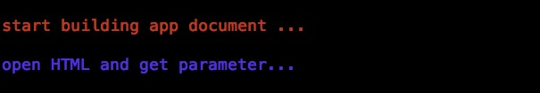
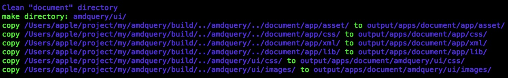
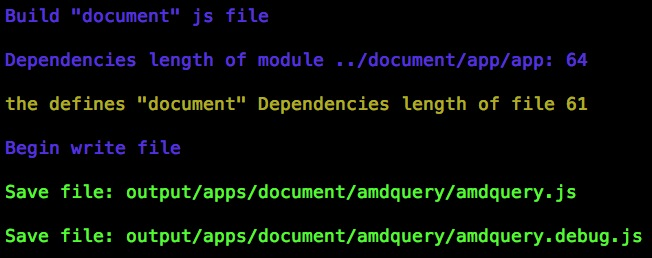
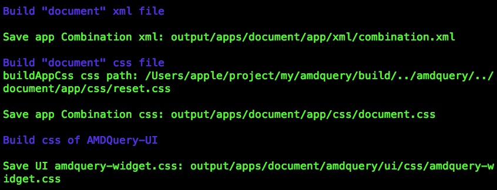

-
Build Definition
Overview
This guide teach you how to combine javascript to a file and minify it. It could reduce file size and http request.
The Building apply nodejs to build and conbine javascript. It load javascript according to AMD standard.
Quick Start
Download nodejs and install nodejs. Open terminal and cd directory of amdquery project, cd build.
Input "npm install" in terminal before start building. NPM will download and install some node modules.
Input "node build.js build_config.js" and watch the log.
Look the directory: build/output/defines. Look over "test.js" and "test.debug.js".
cd "output/apps/document/app", open the "app.html" with a web server.
Broswer html
Quick start a web server. Input "npm install -g connect" or "sudo npm install -g connect". cd root of amdquery directory, input "node server.js". Open browser and input "http://localhost:8080/document/app/app.html" or "http://localhost:8080/build/output/apps/document/app/app.html". You should collect the address in browser.
The
 "Build Application"has detail guide.
"Build Application"has detail guide.Build Dependencies
There are node modules to support Build. The "UglifyJS" be used to minify js and detect syntax error. The clean-css be used to minify css. The "trumpet" be used to parse HTML and compile HTML.
If you want more infomation, please click the link and read "build.js".
- glob>3.x.x
- async>0.0.0
- uglify-js~1.x.x
- clean-css>0.0.0
- trumpet>0.0.0
- underscore>0.0.0
- fs-extra>0.0.0
- through~2.3.4
- concat-stream~1.0.0
Config
This guide would explain how to config build.
cd "build/", open "build_config.js".
Directory Structure root |- amdquery | \- amdquery.js |- document |- build |- build.js |- build_config.js |- test \- test.js \- output |- defines | |- test.debug.js | \- test.js |- apps |- document | \- amdquery | |- amdquery.debug.js | |- amdquery.js | \- ui | |- css | \- iamges |- app |- asset |- css |- xml \- app.html-
amdqueryPath
Configure amdquery.js path. It is relative of build.js .
exports.amdqueryPath = '../amdquery/'; (--amdquery)
-
projectRootPath
Configure project root path. It is relative of build.js .
exports.projectRootPath = '../../'; (--root)
-
outputPath
All build files will save to outputPath. It is relative of build.js .
exports.outputPath = 'output/'; (--output)
-
pathVariable
exports path to load js. "@app" will parse to "../document/app/app" when you use "require(@app/index.js)"
{ "@app":"../document/app/app", "@mypath:":"../test/app/app" } -
debug
whether print log, true or false
-
apps
-
defines
{ //The "test" is name of output javascript which will be create in directory "defines". //It also create "test.debug.js" which is not minify. test: { //The "path" is main of the build-js.It is relative "amdquery.js". path: "../document/app/asset/source/js/scrollTo.js", //The "directory" is array of folder, Building would include all of js under the item-folder.It is relative "amdquery.js". directory: [ "ui/" ], //The "complete" function will be call when building complete. complete: function( minPath, minContent, deubugPath, debugContent ) { var FSE = require( 'fs-extra' ); path = "../document/app/asset/source/js/amdquery.js"; FSE.writeFile( path, debugContent ); } } } -
uglifyOptions
-
cleanCssOptions
Build Detail
1.Read base amdquery.js . we should get the content of amdquery.js, amdquery.js is basal. It began in the file.
If you want to start using "AMDQuery", you must first load the "amdquery.js". So Build will be a top priority loaded and stored in the file start position.2.Build defines. Get the main of js from config. Path is "../document/app/asset/source/js/scrollTo.js"
The "scrollTo.js" require "[ "main/query", "hash/locationHash", "ui/swapview", "ui/scrollableview" ]".
The "oye.node" will find and load these js file, detect dependencies of these js.
Finally, get the all of js then combine to a stream.3.Save js file.According to config, to save js. For this example:
save "test.debug.js" into "output/defines". "test.debug.js" is not compress, it could debug.
save "test.js" into "output/defines". "test.js" is compress.4. If you increase the "complete" function in the configuration, You can do some interesting things after the build is completed.
Top
For this example, I write the contents to a new file. -
Building Application
Overview
This guide will teach you how to build application, How to configure build.
You also need to know how to create an application.
If you need more details or to change the build process, you need to have some knowledge about the nodejs and node-modules.
If you want to build your own js file or css file, you can refer to uglifyOptions and cleanCssOptions.Config
Reference "build_config.js". "apps" is an array, each of which is object.
-
name
The name of the application.
-
path
Application HTML path.
-
debug
If that is true, that build will create a non-compressed "amdquery.debug.js", set the configuration of application to "true" in HTML
-
complete
The callback of the Build.
You can do some interesting things after the build is completed.
//The argument in "complete" { appConfig: { debug: '1', src: '../document/app/app' }, viewContentID; "aQueryViewContentKey", cssPath: [ 'css/reset.css' ], htmlPath: '/Users/apple/project/my/amdquery/build/../amdquery/../document/app/app.html', appProjectPath: '/Users/apple/project/my/amdquery/build/../amdquery/../document/app/', appName: 'document', projectOutputPath: 'output/apps/document/', AMDQueryJSPath: 'apps/document/amdquery/amdquery', AMDQueryJSRelativeHTMLPath: '../amdquery/amdquery', appCombinationXMLRelativePath: 'xml/combination.xml', appCombinationXMLPath: 'output/apps/document/app/xml/combination.xml', appCombinationCssRelativePath: 'css/document.css', appCombinationCssPath: 'output/apps/document/app/css/document.css', uiCombinationCssPath: 'output/apps/document/amdquery/ui/css/amdquery-widget.css', outputHtmlPath: 'output/apps/document/app/app.html' }
Build Detail
1.Open HTML. Get "HTML" path from the configuration.

Use "trumpet" to parse html, Get an array of css hrefs and script tag of application. Parse configuration of the tag.2.Create application directory and copy file.

Create application directory. In this example, path of directory is "output/apps/document/". If the path of directory exists then remove it.
Copy directory:
(This example: AMDQueryJSRootPath is "/Users/apple/project/my/amdquery/build/../amdquery/" or "/Users/apple/project/my/amdquery/")
Copy appProjectPath + "asset/" to "app/asset/"
Copy appProjectPath + "css/" to "app/css/"
Copy appProjectPath + "xml/" to "app/xml/"
Copy appProjectPath + "lib/" to "app/lib/"
Copy AMDQueryJSRootPath + "ui/css/" to "amdquery/ui/css/"
Copy AMDQueryJSRootPath + "ui/images/" to "amdquery/ui/images/"3.Build Javascript of Application

Get "app.js" path to the directory. Set "require" parameter with the path. ("@app" ==> "../document/app/app")
"oye.node" could load all js after setting "require" parameter. Then build save the js files to the output directory. You also can see then log in terminal.4.Build XML of Application
Put all the XML merged into one XML. Root tag is "". Each original XML will be wrapped in " " tag within
The new XML will be saved as "combination.xml". "combination.xml" is easy for reading.
Content of new XML will append into "app.html"5.Build CSS of Application
After the first step has been to get all the "CSS" href, this step will be to find those CSS file through the href and use the "clean-css" to merge them into a CSS file.
The new CSS will be saved as "{#appName}.css" moreover the final step will automatically add a "CSS" tag to "HTML" head, the properties href will be set "css/{#appName}.css".6.Build CSS of AMDQuery UI

Build combine all the CSS of AMDQuery UI and save it as "amdquery-widget.css".7.Modify HTML
Remove all CSS in head and add a new CSS into head, the new CSS href is "css/document.css".
Modify "amdquery.js" script attribute:
change "src" as "../app/app"
change "development" to "false"
change "debug" as you define in configuration
XML append into "app.html".APP
Build set the configuration of the "viewContentID" property to "aQueryViewContentKey" and add combination "XML" into "app.html" body in order to synchronize the contents of loaded view.
This property is used to tell the Application how to find the content view in a non-development model. After building the application development model is false.
When the view is loading, it look for ID as "viewContentID" of "div" after look for property as "viewContentID" of sub-elements. -
-
cleanCss And uglify options
uglifyOptions
-
strict_semicolons:boolean[false] disable automatic semicolon insertion and support for trailing comma in arrays and objects.
-
mangle_options -
mangle:boolean[true] pass false to skip mangling names.
-
toplevel:boolean[false] mangle toplevel names (by default we don’t touch them).
-
defines:array[null] an object with properties named after symbols to replace.
-
except:object[null] an array of names to exclude from compression.
-
no_functions:boolean[false] no mangle functions
-
-
squeeze_options -
make_seqs:boolean[true] which will cause consecutive statements in a block to be merged using the “sequence” (comma) operator.
-
dead_code:boolean[true] which will remove unreachable code.
-
no_warnings:boolean[false] whether output warnings.
-
keep_comps:boolean[true] keep comps.
-
unsafe:boolean[false] enable other additional optimizations that are known to be unsafe in some contrived situations, but could still be generally useful. For now only these:
foo.toString() ==> foo+””
new Array(x,…) ==> [x,…]
new Array(x) ==> Array(x)
-
-
gen_options -
indent_start:number[0] (only applies when beautify is true) – initial indentation in spaces.
-
indent_level:number[4] (only applies when beautify is true) – indentation level, in spaces (pass an even number).
-
quote_keys:boolean[false] if you pass true it will quote all keys in literal objects.
-
space_colon:boolean[false] (only applies when beautify is true) – wether to put a space before the colon in object literals.
-
beautify:boolean[false] pass true if you want indented output.
-
ascii_only:boolean[false] pass true if you want to encode non-ASCII characters as \uXXXX.
-
inline_script:boolean[false] pass true to escape occurrences of
-
cleanCssOptions
-
keepSpecialComments:string["*"] "*" for keeping all (default), 1 for keeping first one only, 0 for removing all.
-
keepBreaks:boolean[false] whether to keep line breaks (default is false).
-
processImport:boolean[true] whether to process @import rules.
-
noRebase:boolean[false] whether to skip URLs rebasing.
-
noAdvanced:boolean[false] set to true to disable advanced optimizations - selector & property merging, reduction, etc.
-
selectorsMergeMode:string["*"] ie8 for IE8 compatibility mode, * for merging all (default).
-